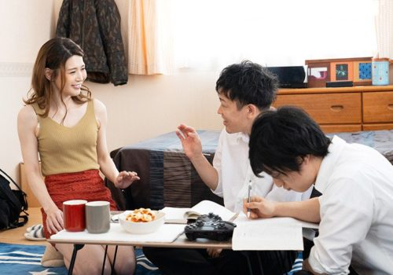

Tôi nhổ một bãi nước miếng, những sợi bọt từ từ mất hút nơi lỗ lồn, con Li rên hừ hừ. Tôi hỏi nó : chắc mày để ai đụ rồi hả. Nó gật đầu nhưng vội đính chánh : sơ sơ thôi nên không tè he như của con Syl. Tôi cười thầm mà không cho ý kiến. Tôi lại hỏi : mày có được bú lồn hồi nào chưa. Nó e thẹn nói lí nhí : tụi Mỹ tao con nào hổng thích được bú lồn, nhưng có thằng bú giỏi, thằng bú hổng nên thân. Tôi gạ : để tao bú thử coi có giống tụi nó chăng. Con nhỏ nghe khoái nên nưng cao người lên rối rít : ừ, mày bú thử tao coi có làm tao nứng rêm lồn hôn. Tao hứa nếu mày bú tao sướng tao cho mày đụ liền. Đụ một lần hổng đã, đụ cái nữa, đụ chừng nào mày quéo thì thôi.

Tôi chẳng nói chi thêm, lo vẹt đám lông lồn ra mà hun hít lên lỗ lồn con nhỏ. Con Li ển người lên, cục thịt thừa ngọ nguậy lù lù như cột mốc, tôi cạp một cái và cắn giữ nơi hàm răng, chờ cho con Li thấm thì tôi nhằn nhằn. Con nhỏ sướng tận mạng nên hai giò đập phạch phạch, tôi nhay thêm vài cái thì vói vò bóp hai vú để nó quơ quàng luôn. Nó đưa cao hai giò, đập thình thình vô tay lái và lưng ghế, tôi cắn và xê dịch hàm răng lên chỗ hột le và lôi tuốt nó vô cắn lụp bụp. Con Li oằn người kêu chí chóe : ô men, mai pút xy. Rồi nó bụm lấy háng mà nắc cho hột le lùm xùm nơi miệng tôi.
Tôi càng cắn thì hột le càng cộm lên, nước khí lồn con nhỏ chảy rề rề ấm ấm, tôi cử động hàm răng làm cái hột le bị lôi theo kêu sột sột nghe rất khêu gợi. Con Li giờ hết còn bình tĩnh nên một tay đè chặt bàn tay tôi đang vê đầu vú nó, còn một tay thì bịt chặt lấy gáy tôi mà ấn vô lồn biểu tôi cắn mạnh lên.
Phần 1
Chào tất cả những ai đang theo dõi truyện của tôi. Hôm nay tôi sẽ đưa các bạn đến một câu chuyện khá hấp dẫn. Nói về cuộc phiêu lưu tình ái với các bạn học của mình. Các bạn chắc thắc mắc nhân vật chính là ai. Xin thưa đó không phải một người xa lạ cho lắm. Đấy là Hưng. Nếu bất kỳ ai theo dõi sẽ nhận biết đó là nhân vật chính của khá nhiều câu chuyện của tôi rồi.
Hắn hay còn là Hưng đã từ khi gặp quân bài thần kỳ đã trải qua những giây phút thần tiên. Hắn đã được phá trinh rất nhiều cô gái cả trong mơ và trên thực tế. Hắn dựa vào những hiểu biết của mình để hắn thực hiện tham vọng trong mơ. Và sử dụng những khả năng có được trong giấc mơ để vào trong thực tế. Nhờ vậy có thể nói hắn đã thành công khi mà hắn trả thù được và chiếm đoạt tất cả các cô gái xinh đẹp nhất trong mơ của hắn. Và sau khi thực hiện xong việc trả thù mấy thằng bạn. Thì hôm nay hắn lại để ý đến mấy cô gái cùng lớp. Đáng lẽ hắn không nghĩ đến việc này đâu. Nhưng mà thằng Nam đã khiến hắn đổi ý.
Khi mà bọn này liên tục muốn hắn giúp chúng được địt Mai. Cô bạn cùng lớp hắn, có thể nói Mai rất xinh. Và hình như cũng có cảm tình với hắn thì phải. Thế nên bọn thằng Nam mới bảo hắn tạo cơ hội cho chúng chứ. Thật tình tuy đã phá trinh rất nhiều cô gái nhưng chưa bao giờ hắn được địt cô gái nào quen cả. Toàn bọn lạ mà thôi. Thế nên hắn cũng muốn thử cái cảm giác này cho biết. Không biết phá trinh mấy cô gái quen biết thì thế nào. Không biết có cô em nào ăn vạ không. Tôi rất muốn thử cái cảm giác này một lần. Trước tiên phải kiếm được cô nàng Mai đã chứ.
Tuy biết Mai là hoa khôi của khoa đấy chứ. Nhưng mà nói thật tôi chưa biết Mai nhiều lắm. Phải tìm thông tin về cô nàng thôi. Và không có gì dễ dàng hơn là phải hỏi thằng Hoà mới được. Vì thằng Hoà đã theo đuổi Mai mãi mà không được.
Tính toán đâu vào đấy xong hắn gọi điện cho thằng Hoà. Thằng Hoà nghe hắn gọi thì đến ngay nhà hàng mà Minh Tuyết lúc trước làm. Ở đây hắn chẳng có hứng mà kiếm mấy con đíêm mà địt. Hắn chỉ cần hỏi về bé Mai mà thôi. Thằng Hoà nói hết ngay những gì mà nó biết. Hoà cũng chẳng hỏi lý do tại sao mà hắn hỏi về Mai cả, chắc là thằng này biết lý do rồi đây.
Có một lượng thông tin có thể nói là khá đầy đủ của Mai. Hắn bắt đầu lên kế sách. Hắn là thằng có tính rất cẩn thận làm bất cứ việc gì cũng tính toán cẩn thận. Có chắc chắn mới làm. Vì có vậy mới không ai bắt nọn hắn được chứ. Lần này để cưa đổ em Mai chắc không khó gì đâu. Vì như lời thằng Hoà nói thì hắn biết Mai hình như có để ý đến hắn hay sao đó. Nếu thì hắn sẽ dễ dàng thực hiện thôi. Và ngày mai sẽ thực hiện kế hoạch này.
Mọi hôm chẳng mấy khi hắn đến lớp mà không chuồn về sớm. Nhưng hôm nay đến lớp thấy Mai ngồi cạnh mấy cô bạn hắn lại chỗ nàng mà ngồi. Thế là hắn liền lại gần chỗ Mai ngồi. Hắn đã để ý rất kỹ phản ứng mấy cô nàng này. Mấy đứa ngồi cạnh chỉ liếc qua tôi cái rồi quay vào tiếp tục câu chuỵên. Còn Mai thì chăm chú nhìn tôi hơn. Thấy vậy hắn cười với nàng một cái rồi chỉ tay ra hiệu là có chuyện muốn nói. Mai bất chợt đỏ mặt quay đi. Những biểu hiện này làm hắn chắc được khoảng 70 phần trăm là sẽ thành công rồi. Cả buổi học ngồi trong lớp chẳng tập trung nghe giảng gì cả. Vì hắn cứ nhìn chăm chăm để ý từng hành động của Mai.
Thi thoảng thấy nàng lại quay xuống liếc nhìn hắn. Thấy hắn vẫn nhìn mình từ nãy đến giờ thì Mai đỏ mặt quay đi. Hết giờ học lúc tất cả đứng lên đi về. Các bạn biết truyền âm nhập mật chứ, hắn đã vận dụng cách này để nói với Mai suốt cả giờ. Mai rất lạ vì không ai có thể nghe thấy hắn nói gì ngoài nàng cả. Thế nên bây giờ hắn cũng chỉ để nàng nghe thấy mà thôi.
-Mai mình muốn nói chuyện với Mai một lát. Bạn đi nhé.
Mai lúc đầu còn chần chừ. Nhưng sau đó đành đồng ý luôn Mai hỏi:
-Thế đi đâu vậy Hưng.
-Mình đi công viên nói chuyện cho yên tĩnh mình có chuyện quan trọng muốn nói với Mai. Đừng ngại mình không có ý gì đâu. Hắn thấy Mai khi nghe thấy phải đến công viên nên có dấu hiệu ngần ngại liền nói vậy cho nàng yên tâm.
-Nhưng mà mình về muộn thì mẹ nói. Để mình ra bưu điện gọi về nhà nhé.
-Thôi không cần ra đấy đâu. Lấy điện thoại mình mà gọi.
Không đợi Mai có ý kiến hắn rút ngay điện thoại đưa cho nàng ngay. Lúc đó vẫn có mấy đứa trong lớp thấy thế nên tò mò đứng lại. Nhưng mặc kệ chúng nó quan tâm làm gì. Mai cầm điện thoại gọi về nhà bảo mẹ là sẽ về muộn vì phải ở lại lớp học nhóm. Gọi xong Mai đưa điện thoại cho hắn.
-Mình gọi về nhà rồi. Nhưng mà mình đi se buýt.
-Mình đèo Mai có được không.
Mai không có ý kiến gì mà chỉ đi theo và ra cổng chờ tôi lấy xe. Nhiều thằng thấy Mai đứng ngoài cổng liền vòng vào bảo lên nó đèo. Nhưng mà Mai từ chối. Ra đến nơi bảo Mai lên xe hắn đèo nàng đi. Nhiều con mắt trố lên nhìn. Chắc đang thấy ngạc nhiên sao hắn có thể đèo hoa khôi của trường chứ. Nhiều thằng sẽ ngưỡng mộ lắm đây. Đang nổ máy thì thằng Hoà phóng đến bảo:
-Chào hai bạn. Có việc gì đi đâu à. Sao tình cảm thế.
Mai ngại không nói gì.” Bọn mình có chuyện chào Hoà nhớ. Gặp lại sau”. Vừa nói vừa nháy mắt với thằng Hoà. Thằng này cũng hiểu ý lên mỉm cười bí ẩn. Thằng Hoà khôn lắm. Nếu không làm sao Hoà thoát được sự trả thù của hắn chứ. Không có gì phải vướng mắc nữa hắn đèo Mai đến công viên nơi hắn đã phá trinh con Hoa. Có bạn nào nhớ công viên gì không hả.
Trên đường đi hắn hỏi Mai:” Mai có đói không vậy mình vào ăn gì đi rồi mình có chuyện muốn nói với Mai”
-Mình vẫn chưa thấy đói. Cứ đến nơi Hưng muốn đi rồi có gì mình phải về nhà luôn.
Làm sao em về luôn được chứ. Hắn có thể chắc chắn như vậy. Thế nên đưa Mai vào trong công viên hắn ra mua một trai nước và một ít bỏng. Và đưa cho nàng uống cho đỡ khát, Lúc đầu Mai vẫn còn ngại nên hắn chỉ nói chuyện phiếm mà thôi. Một lát sau thấy Mai bắt đầu hứng thú trong câu chuỵên hắn mới đi sâu thêm một bước nữa.
-Mai mình thấy bạn xinh lắm. Phải công nhận bạn rất xinh và có sức thu hút với mấy thằng con trai đấy.
-Hưng đừng nói thế. Bạn khen quá đấy thôi.
-Mình nói thật đấy, bằng chứng là lúc nãy ngoài cổng trường bao nhiêu anh muốn đèo Mai về đấy thôi.
-Nhưng mình lại không thích mấy tên đó. Có cái gì phản cảm ấy.
-Thế Mai thích bạn trai thế nào?
-Mình không nói đâu. Hưng muốn biết thì tự đoán đi.
-Mình thấy ai mà được may mắn làm bạn trai Mai thì hạnh phúc lắm đó.
Nghe thấy hắn nói thế Mai nhìn hắn ai oán rồi nói:” nhưng mà người ấy lại không để ý đến mình”. Cô nàng bắt đầu bộc lộ rồi đây. Nếu như mà mình đẩy mạnh một cái thì chắc nàng sẽ đổ ngay thôi.
-Ai mà ngu thế không biết. Được Mai để mắt xanh đến thì hạnh phúc nhất đời ấy chứ. Sao lại không biết. Mình chắc chắn người đó cũng thích Mai nhưng sợ không thể làm bạn trai một người như Mai nên không dám thổ lộ đó.
-Mai không tin đâu. Vì với con gái thì chỉ cần người đó yêu mình là đủ.
Mình biết ai là người may mắn rồi. Bây giờ Mai có muốn mình nói ra không vậy.
-Hưng nói đi. Xem có đoán đúng không vậy.
-Nếu đúng Mai phải thừa nhận đấy nhé.
Ánh mắt nàng sáng lên khi thấy hắn nói chắc chắn như vậy. Mai gật đầu đồng ý và chú mắt nhìn vào hắn để chờ nghe hắn nói. Xem xem mình có thất vọng hay là vui mừng. Biết Mai đang chờ. Hắn liền quyết định đánh đòn quyết định luôn. Bất chợt ôm Mai vào lòng. Mai bất ngờ nên đẩy hắn ra nhưng hắn đã nói nhủ thầm vào tai nàng” Mai anh biết tình cảm em dành cho anh. Và anh cũng vậy em có tin không”.
Người Mai run lên khi nghe thấy lời nói này của hắn. Mai lặng thinh không nói cứ để hắn ôm nàng thật chặt. Hắn có thể cảm thấy tim nàng đang đập dồn dập vì diễn biến bất ngờ này. Hắn không hành động gì thêm. Đợi một lát hắn buông Mai ra rồi nói giọng như lỗi lầm:” Mai nếu như em không thích anh thì cho anh xin lỗi. Anh hứa sẽ không gây khó xử cho em. Và anh đã tự mơ mộng. Xin lỗi em vạn lần xin lỗi em”
Mai nghe đến đó thì mắt chợt đỏ heo lấy tay bịt miệng hắn lại rồi với giọng nghẹn ngào” Hưng không đoán sai đâu. Mai cũng thích Hưng từ lâu lắm rồi. Nhưng mình là con gái không thể thổ lộ được. Hôm nay được nghe Hưng nói mình vui lắm nên không nói được lên lời đó thôi”.
Cá đã cắn câu rồi. Mai đã thừa nhận tình cảm dành cho hắn rồi. Nhưng để chắc chắn hắn đánh mạnh nữa. Hắn bất ngờ quay mặt Mai lại và hôn lên môi nàng một nụ hôn nhẹ nhàng mà thôi. Mai như đợi nụ hôn này lâu lắm rồi nên nàng giữ chặt lấy đầu hắn mà hôn lại thật sâu. Nụ hôn ngọt ngào làm sao. Có thể nói tất cả những cô gái hắn gặp không ít. Nhưng ngoại trừ Minh Tuyết ra thì có ai thật lòng yêu hắn như Mai bây giờ đâu. Nên hắn cũng cảm động để hôn lại Mai. Nụ hôn kéo dài thật lâu.
Khi kết thúc Mai ngồi dựa vào hắn mà nói lời âu yếm:” em hạn phúc quá. Em không ngờ là mình lại có được tình yêu của anh. Em cứ ngỡ mối tình của mình là đơn phương không mong chờ đáp lại. Em yêu anh lâu lắm rồi”
“Anh cũng vậy. Anh yêu em ngay lần đầu gặp gỡ. Nhưng sợ em không đồng ý nên không dám thổ lộ. Có thời gian gần đây anh mới có thể khẳng định tình cảm em dành cho anh nên anh mới tự tin nói ra”
Mai bị hắn nói trúng tim đen nên xấu hổ ngục đầu vào vai hắn mà nói nhỏ nhẹ:” Sao anh biết em yêu anh vậy. Vì kể cả mấy đứa bạn thân của em cũng không thể biết được mà”.
“Đó là sự nhạy cảm của hai con tim yêu nhau. Bằng chứng là những điều anh nói với em mấy đứa bên cạnh có nghe thấy đâu”
Mai nhớ lại thấy đúng như vậy liền gật đầu đồng ý với ý kiến của hắn. Sau đó cả hai ngồi bên nhau nói đủ mọi chuyện trên trời dưới đất. Hắn biết được nàng thích hắn bắt đầu cách đây cả năm trời rồi. Nhưng hắn quá bận nên không để ý. Nếu bây giờ mà hắn muốn địt nàng chắc được ngay thôi. Vì hắn có thủ pháp kích dâm mà. Các bạn còn nhớ chứ. Nhưng hắn vẫn muốn kéo dài cảm giác có người yêu thêm một thời gian nữa nên chưa chiếm đoạt Mai vôi. Vì trước sau gì nàng cũng là của hắn mà. Thế nên sau khi nói chuyện và hôn nhau say đắm. Hắn đèo Mai đi ăn cơm trưa. Mai có vẻ rất hạnh phúc vì nghĩ hắn yêu nàng thật sự.